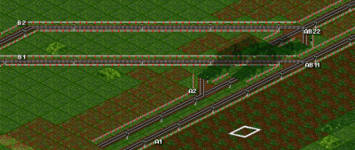
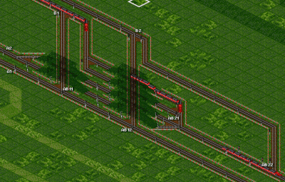
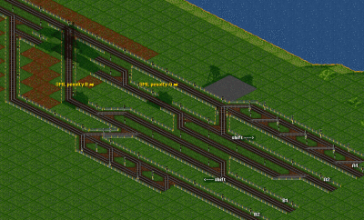
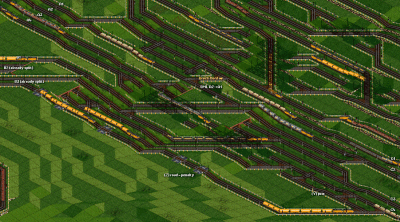

Mainline Mergers
Mergers or joins of different tracks have in recent public server games been a constant issue and the cause of many jams. The scope of this article is to discuss solutions for mergers.
First: what is a merger? Mergers are places where two lines with (approximately) equal priority merge, e.g. at BBH each outgoing direction needs to merge the incoming lines of the other two or three. I’ll use the word „merger“ in contrast to „join“ which shall describe the situation where a side line joins the main line. The latter needs at least partially different solutions than main line mergers.
1. Simple merge
The simplest case – which works at best only up to medium load – is just connecting two ML as in image 1 without any choice for the tracks: B2 connects to A2 and B1 connects to A1 only. A slight improvement might be gained, if the more busy track is given a (slight) prio. 
image 1: simple merger 2 + 2 -> 2

2. Introducing choice
Far more fluency may be gained, if you allow trains to choose a free outgoing track of the merger. There are several ways to achieve this and they all have their destinct advantages and disadvantages. A quite simple solution albeit very efficient one is to declare one continuous track and merge each of the tracks of the other mainline into it giving it the choice of each incoming track. 
image 2: merge 2+2 -> 2 with choice

In this example care has been taken that the branching track can hold at least one train after the branch in order to avoid blocking of that track should the entry signal on the merger be red: e.g. the track between B1 and AB11 is sufficient to hold one entire train, so a subsequent train coming on B1, may still go into the B1->AB21 branch. Depending upon the load of the different tracks, small priorities may be given to the ML which is merged upon. Choosing this construction type, it is a good idea to give the ML which is busiest the straight track and thus the priority. Note that this only works in an unmodified way, if at least one set of tracks continues onward w/o reduction in the number of tracks, e.g. a 3+3->2 won’t work. A real world example may look like this (taken from PSG #74):

image 3: real world 3+3 -> 3 merger from PSG #74
This type may be extended such that each of the incoming tracks of both incoming directions is given a choice. Mostly, though this does not gain much, if any at all, boost in performance compared to a well built solution like described above.
3. SML mergers
Another solution which may aid ML mergers is to install two shift main lines (SMLs) prior to the merge and shift one incoming direction to – say – left and the other to the right (see illustration 4). Following this, a choice for the outer tracks may be unnecessary, if priority is given to the track which trains are shifted upon. This example has been applied in PSG #82 where you may find a lot real world examples. 
image 4: merger 2+2 -> 2 using SML

Note that the SML type is exactly the same as the very simple type but using SML prior to the merge on each of the incoming directions.
Outlook
Real life always is more complex and even combinations of the above methods may be applied successfully. In certain cases they may be even more appropriate than clean solutions of one type or the other. An important input to the solution should be the load of the single incoming tracks as the choice of the length of priorities, strength of penalties and direction of SMLs depend on it. The aim should always be to maintain a fluent network with as little tracks per direction as possible. See image 5 for an example from the current PSG #86 which applies both methods in one balancer very successfully and uses penalties and prios in order to fine tune the balance. 
image 5: real world 4+3 -> 4 merger using both, choice and SML. Taking into account the different load of the tracks, the fine tuning is done using roads as penalties and prios. Built by Kolbur, modified by Mark, slightly modified by the author

Categories: Public Server, Tutorial, Wiki
Ammler March 23, 2008 00:40
nice article, almost worth for a wiki page 😉
Osai March 23, 2008 23:54
This is an article definitely worth reading! I like the theory of building =)
tneo March 28, 2008 11:08
Nice article. 🙂